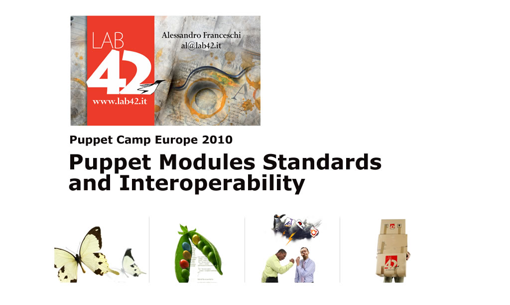
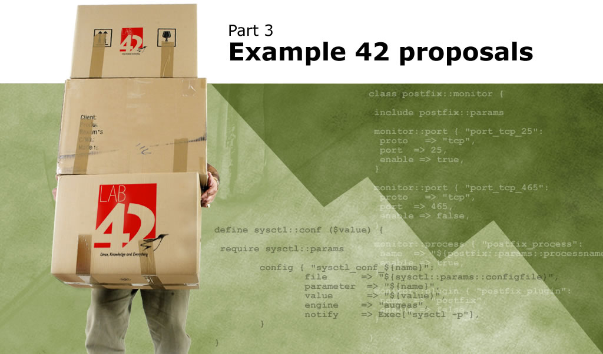

Puppet Modules Standards and Interoperability

Part 1 - Evolution of species
First there were recipes...
- Unstructured manifests and files
- Useful for learning and customizing
- Generally tuned for specific OS and environments
- Limited reusability (a notable exception: SSH::auth)
Then came modules ...
- Standard structure
- Reusable (not always)
- Intended to be cross OS (not always)
- Intended to be "Plug & Play" (hardly)
From modules to collections ...
Complete sets of modules
- Ready to use and customize
- Generally based on a specific OS
- Internal coherency, logic and design
- Use of custom types and functions
- Difficult to cherry pick single modules
- Low interoperability among different collections
Collections' parallel universes
Complete list on Puppet's wiki
May the Forge be with You!
Puppet Modules Forge
- Central repository of modules
- Name based hierarchy
- Easily usable and pluggable (?)
- Embedded in Puppet's tools set
- Future integration with external node tools (Dashboard)
- Automatic Metadata management
From Caos to Revelation

"Let's put stuff together and see what happens"
The road seems clear,
PuppetLabs defines it
We may forge it.
Part 2 - Who Said Standards?
Conventions
- Name of application = name of module
- Module name should be lowercase without space, :: and /
- Module name "site" is reserved for local use
- include postfix - Installs and runs the Postfix service
- include postfix::disable - Installs Postfix but doesn't run the service
- include samba::server - Installs Samba server
- include samba::client - Installs Samba client
- import autofs - Loads $modulepath/autofs/manifests/init.pp
- include autofs::server - Loads $modulepath/autofs/manifests/server.pp
Modules path and structure
Where to place modules:
[root@localhost ~]# puppetmasterd --genconfig | grep modulepath
modulepath = /etc/puppet/modules:/usr/share/puppet/modules
How files are organized in a module:
$modulepath/
downcased_module_name/
tests/
init.pp
files/
manifests/
init.pp
lib/
puppet/
parser/
functions
provider/
type/
facter/
templates/
metadata.json
README
Notes:
- lib was plugins on Puppet < 0.25
- depends/ directory is obsolete
Referring to managed files
Static source files or templates:
class autofs::client {
package { autofs: ensure => latest }
service { autofs: ensure => running }
file { "/etc/auto.homes":
source => "puppet://$servername/modules/autofs/auto.homes"
}
file { "/etc/auto.master":
content => template("autofs/auto.master.erb")
}
}
Sourced files are searched in:
$modulepath/autofs/files/auto.homes
Templates are searched in:
$templatedir/autofs/auto.master.erb
$modulepath/autofs/templates/auto.master.erb
Modules documentation
Puppetdoc generates documentation from manifests comments:
$ puppetdoc [--all] --mode rdoc [--outputdir ] [--debug|--verbose] [--trace]
[--modulepath ] [--manifestdir ] [--config ]
Comment classes as below:
# Class: apache
#
# This module manages Apache
#
# Parameters:
#
# Actions:
#
# Requires:
#
# Sample Usage:
#
# [Remember: No empty lines between comments and class definition]
class apache {
...
}
Supporting different OS:
Dedicated sub classes
Minor differences can be managed in the same class:
class apache {
[...]
package { apache:
name => "${apache::params::packagename}",
ensure => present,
}
}
Major differences are managed in dedicated (autoloaded) classes:
class apache {
[...]
case $operatingsystem {
debian: { include apache::debian }
ubuntu: { include apache::debian }
default: { }
}
}
Supporting different OS:
Centralize internal variables
A class where to place all the internal variables of a module::params
class apache::params {
$packagename = $operatingsystem ? {
freebsd => "apache20",
debian => "apache2",
ubuntu => "apache2",
default => "httpd",
}
$servicename = $operatingsystem ? {
debian => "apache2",
ubuntu => "apache2",
default => "httpd",
}
$username = $operatingsystem ? {
debian => "www-data",
ubuntu => "www-data",
default => "apache",
}
$configfile = $operatingsystem ?{
freebsd => "/usr/local/etc/apache20/httpd.conf",
ubuntu => "/etc/apache2/apache2.conf",
debian => "/etc/apache2/apache2.conf",
default => "/etc/httpd/conf/httpd.conf",
}
$configdir = $operatingsystem ?{
freebsd => "/usr/local/etc/apache20",
ubuntu => "/etc/apache2",
debian => "/etc/apache2",
default => "/etc/httpd/conf",
}
$documentroot = $operatingsystem ?{
debian => "/var/www",
ubuntu => "/var/www",
suse => "/srv/www",
default => "/var/www/html",
}
}
Anatomy of a reusable module
- Can be included as is to provide standard service
- Eases customizations without direct modification of its contents
- May suggest, but not force, the logic for files provisioning
- Provides, when needed, autonomous custom types, facts, functions
- Documents the external custom types/facts/functions it needs
- Has defaults for the needed variables
Managing variables and files
Alternatives for managing user variables:
- Required variables are provided by an external node tool
- Variables are defined at node level, according to a node inheritance tree
- Variables are defined in configuration classes, included by nodes
- No custom variables, only facts
- Variables are defined in an external data source (See: extlookup)
Alternatives for providing configuration files:
- Provide static files, sourced according to a defined path hierarchy
- Provide templates based on user variables
- Build files from fragments (Using custom types like concat )
- Files' contents are managed via the Augeas type
- Files' inline modifications are done with custom types
Customizing modules
Customization without module modification:
- + Module can be reused and shared among different projects
- + Module can be easily synced with its mainstream source
- - Stick to module's logic or apply modifications form an external module
- - Modifications must be done on subclasses that inherit or include module's classes
- = Really necessary? Will people (automatically) update their modules?
Direct modification of the module:
- + Easier to modify and manage
- + Easier to apply custom logic
- - Can't be reused as is in different projects
- - Can't be automatically updated with mainstream
- = Not elegant. Limited reusability. No upstream patching.
Part 3 - Example42 proposals

www.example42.com
- A set of Puppet modules and sample infrastructures
- Status: Erratic :-) Between consolidation and experimentation
- Useful (hopefully) for learning and customization
- Various modules not standardized and "production ready", at least as is
- Multi OS support, easy to improve
- By default no config files management logic is forced
- "Made to be adapted" to custom logic and needs
- "SysAdmin approach" to ease integration in existing infrastrucures
Addressing Interoperability Issues
- Module are not always independent
- May use general (common) defines and functions (concat, replaceline...)
- May need resources provided by other modules (apache .conf, sysctl...)
- May integrate monitoring resources based on custom logic or application (munin, nagios...)
- May require the absence of other modules (postfix vs sendmail)
Extending naming conventions...
Proposed extensions:
- include samba::absent
Completely remove package (and Puppet managed files?)
- include samba::disableboot
Disable service at boot time and don't check status runtime
- samba::monitor
A standard way to define what to monitor
- samba::backup
A standard way to define what to backup
- samba::conf ( or samba::settings )
General purpose inline modification define for main configuration file
(This is a call for standardization: first we should agree on needs, then on naming)
A general monitor class
- On the module you define what you want to monitor, not how
- Needs naming convention to allow integration between modules' sets
- A syntax example:
class postfix::monitor {
include postfix::params
monitor::port { "port_tcp_25":
proto => "tcp",
port => 25,
enable => true,
}
monitor::port { "port_tcp_465":
proto => "tcp",
port => 465,
enable => false,
}
monitor::process { "postfix_process":
name => "${postfix::params::processname}",
enable => true,
}
monitor::plugin { "postfix_plugin":
name => "${postfix::params::plugin}",
enable => false,
}
}
A general backup class
- Wrapper to define what to backup
- Needs naming convention... (am I obsessive?)
- An example:
class apache::backup {
include apache::params
backup { "apache_data":
frequency => daily,
path => "${apache::params::documentroot}",
enabled => true,
host => $fqdn,
}
backup { "apache_logs":
frequency => daily,
path => "${apache::params::logs}",
enabled => false,
host => $fqdn,
}
}
More extended classes...
Other extensions (ab)uses:
- samba::firewall
(
Defines firewall rules needed for service operations )
- apache::audit
(
Debugs / audits an application)
- mailscanner::links
(
Defines web interfaces urls provided by the module )
- Ideas? Suggestions?
A convention for inline mods
- Inline modifications are generally not reccomended
- Still in some cases they can be useful or just necessary
- A proposed naming convention: modulename::conf (ie: samba::conf)
- Implementation could be via custom type or define
- An example with custom "config" define....
define sysctl::conf ($value) {
require sysctl::params
config { "sysctl_conf_${name}":
file => "${sysctl::params::configfile}",
parameter => "${name}",
value => "${value}",
engine => "augeas",
notify => Exec["sysctl -p"],
}
}
A generic wrapper for inline mod engines
- Wrapper to standardize single inline modifications
- Can use different engines for different cases...
- Different engine may require value - parameters passed as single lines matching a pattern
- An implementation example:
define config (
$file='',
$line='',
$pattern='',
$parameter='',
$value='',
$engine='',
$source='default',
$lens='IniFile'
) {
case $engine {
augeas: {
augeas {
"Config_augeas_$file-$parameter":
context => "/files$file",
changes => "set $parameter $value",
# onlyif => "get $parameter != $value",
}
}
file2augeas: {
file2augeas {
"Config_file2augeas_$file-$parameter":
file => "$file",
parameter => "$parameter",
value => "$value",
lens => "$lens",
}
}
line: {
line {
"Config_line_$file-$line":
file => "$file",
line => "$line",
ensure => "present",
source => "$source",
}
}
replaceline: {
replaceline {
"Config_replaceline_$file-$line":
file => "$file",
pattern => "$pattern",
replacement => "$line",
}
}
default: {
# You may define a default
}
}
}
Puppet for the Masses!
Exploring methods to make Puppet useful also to who...
..
does not really need it ...
... or has no intention to learn and use it.
One Shot Puppet runs for prototypes and appliances:
- Baselines for general systems setups:
- hardening of vanilla systems,
- best practices setups.
- Toasters for appliances setups:
- fast and easy way to configure specific systems,
- automation of time consuming setup activites.
Integrate in your Puppet modules or Run Once and forget!
A Mail Server toaster
# Postfix + Mysql + Dovecot + MailScanner + Mailwatch + Clamav + SpamAssassin
# Example42 toaster (Variables and classes can be included via an external tool)
# Variables to set and customize (and hide, when secret)
$postfix_mysqluser = "postfix"
$postfix_mysqlpassword = "example42"
$postfix_mysqlhost = "localhost"
$postfix_mysqldbname = "postfix"
$postfix_mynetworks = "10.42.0.0/16, 127.0.0.1/32"
$mailscanner_mysqluser = "mailwatch"
$mailscanner_mysqlpassword = "example42"
$mailscanner_mysqlhost = "localhost"
$mailscanner_mysqldbname = "mailscanner"
$mailscanner_adminuser = "admin"
$mailscanner_adminpassword = "admin"
# General setups
Exec { path => "/bin:/sbin:/usr/bin:/usr/sbin" }
import "common"
# Toaster components
include mysql
include sendmail::disable
include postfix::postfixadmin
include dovecot::mysql
include mailscanner::mailwatch
include clamav
include squirrelmail
Part 4 - Questions and discussions
Part ? - Mother nature